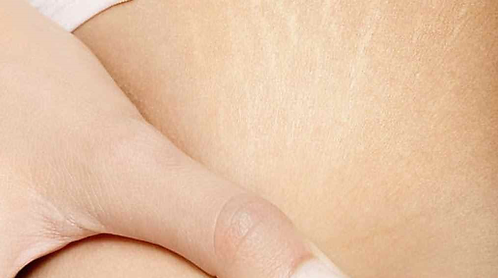

Procedimientos de Fotona ofrecidos en nuestro Hospital:
- Acné Activo
- Rejuvenecimiento Facial 4D
- Manchas en piel
- Tensado Corporal (Abdomen, brazos, piernas)
- Estrías
- Telangiectasias (Venitas o arañitas)
- Cicatrices
- Eliminación de lunares, mezquinos
- Onicomicosis (Hongos en las uñas)
- Ronquido
Cicatrices
Aplicando el laser Erbio conseguimos mejorar la textura y reparar la superfie de la piel a través del estimulo de la gereración de nuevo colageno.

Estrías
La aplicación de laser en la estria genera una remodelación de la misma internamente que permite mejorarla sustancialmente.

arañitas
Tratamiento que responde muy bien a este principalmente en la piel blanca.
Procedimientos ginecológicos - Dr. Walbin Sánchez
- Rejuvenecimiento Vaginal conocido como Intimalaser
- Plastía de labios vaginales
- Tratamiento de incontinencia urinal conocido como Incontilaser
- Cauterización con láser para displasías leves